Nonni Sullivan
MART 411 - Web Technologies
Hi there! My name is Nonni. I'm a third-year Media Arts major with a strong focus in animation! I'll earn my Bachelor's degree in Spring 2026, and then I'll move on to graduate studies in Media Arts the following semester. I mainly work frame-by-frame in form, but I'm also a huge fan of basic illustration. One of the most important things you should know about me is that I'm utterly obsessed with color. I LOVE it! I make sure every aspect of my life is as colorful as I can make it. From my wardrobe to my artwork to my belongings, I try to be as bright as I can be. You'll often see me on campus in my orange coat with my rainbow tie-dye backpack! Feel free to say hi!
I take a lot of inspiration from cartoons I grew up with, as well as from indie projects that are revolutionizing the world of modern animation. Some of my biggest inspirations are My Little Pony: Friendship is Magic, Steven Universe, Hazbin Hotel, and Randy Cunningham: 9th Grade Ninja.
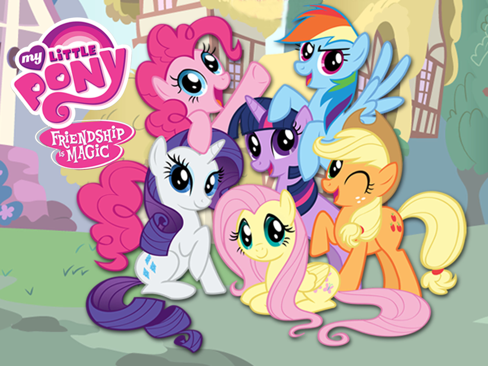 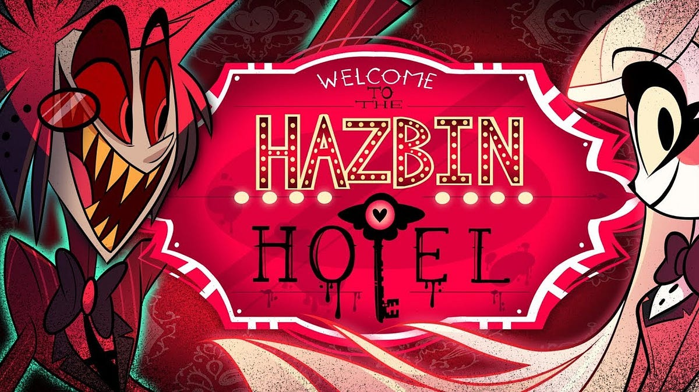
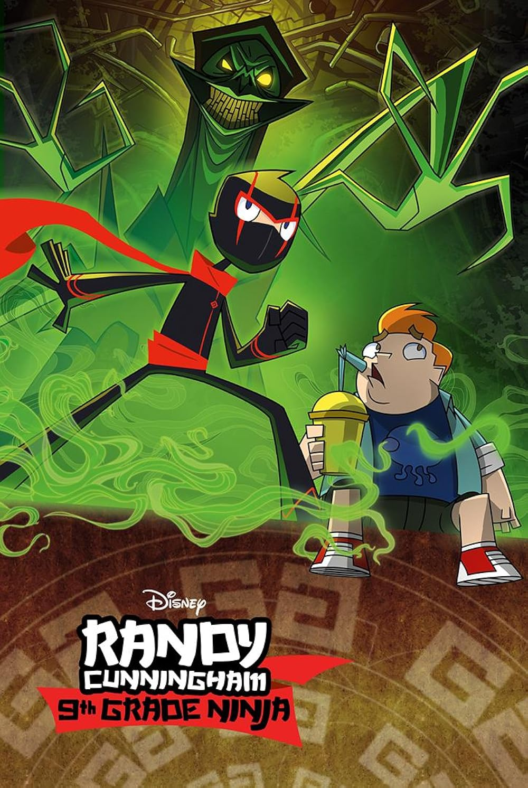
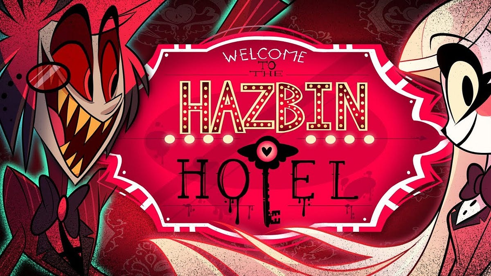
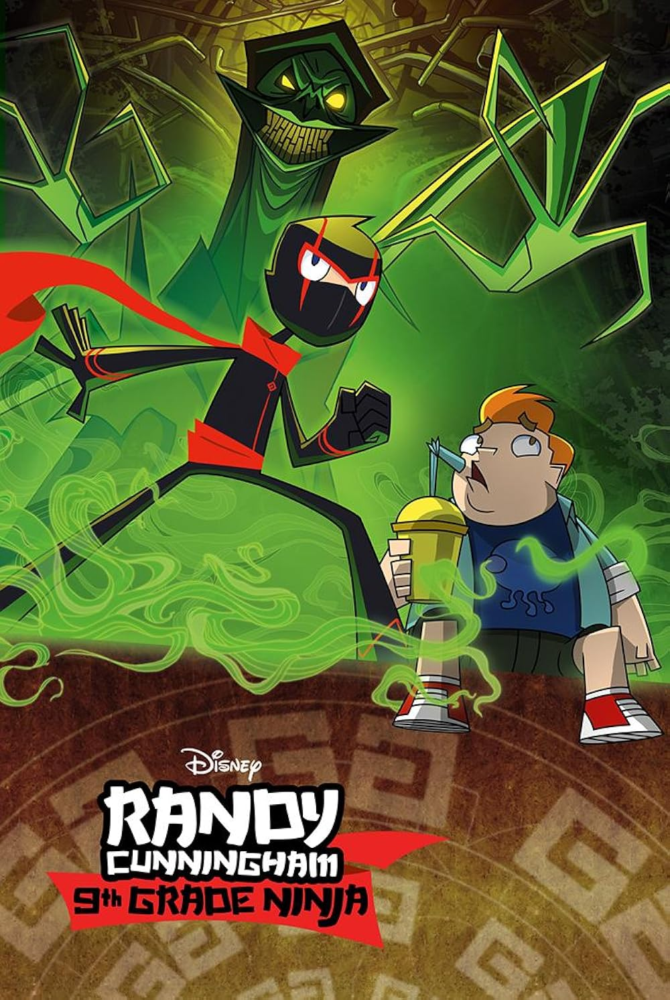
 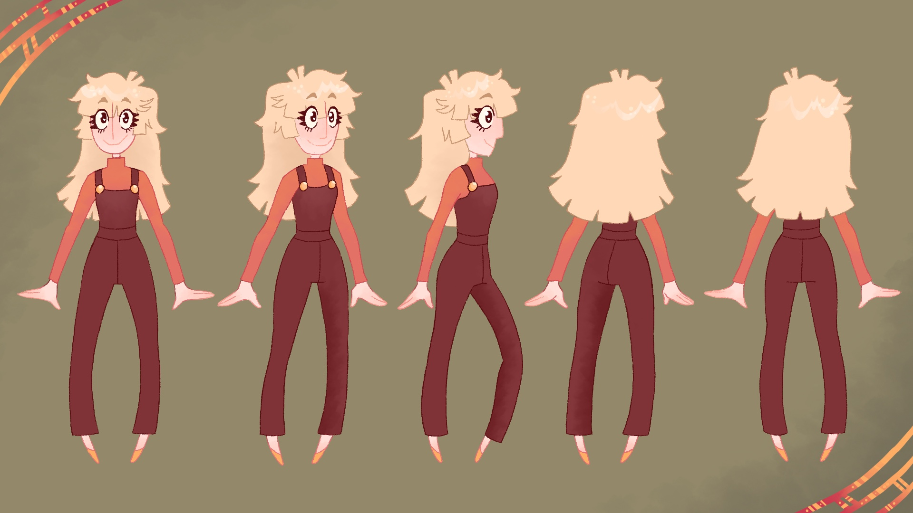
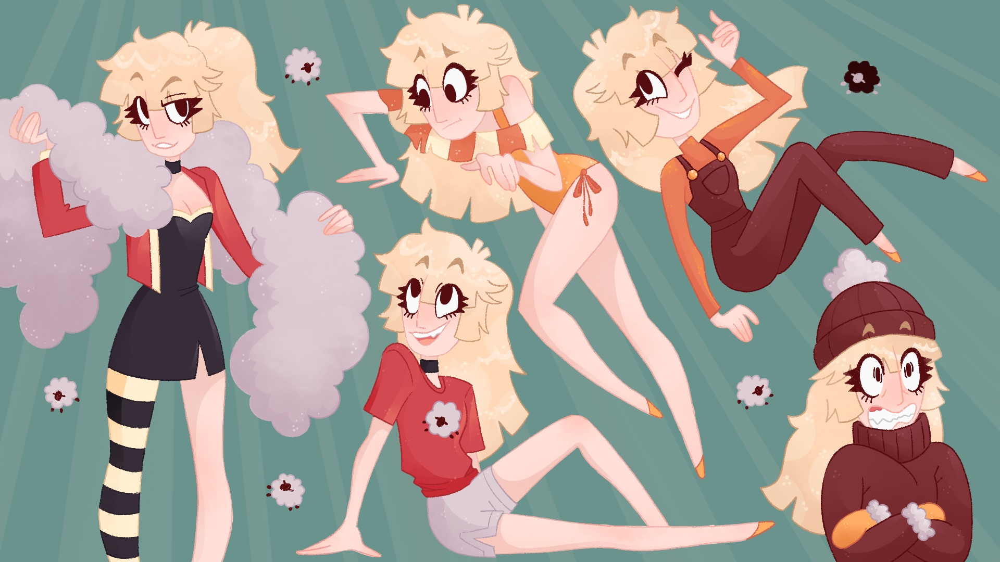
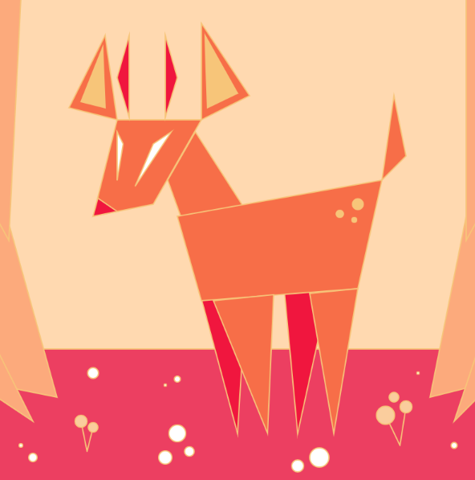
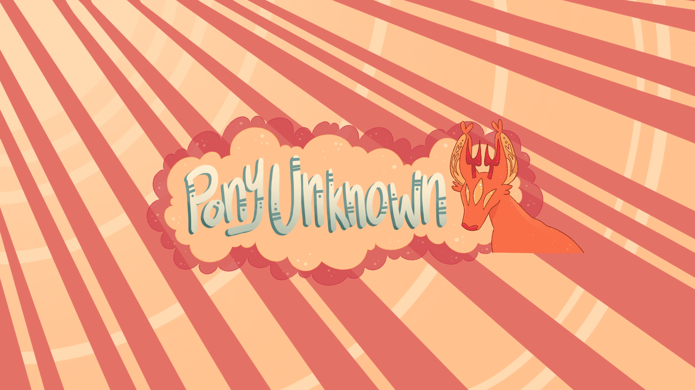
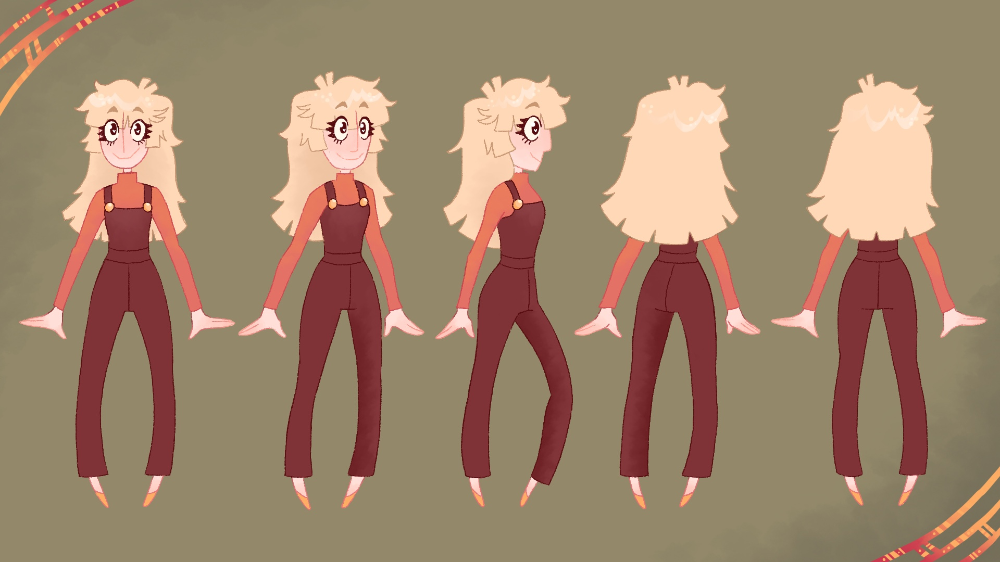
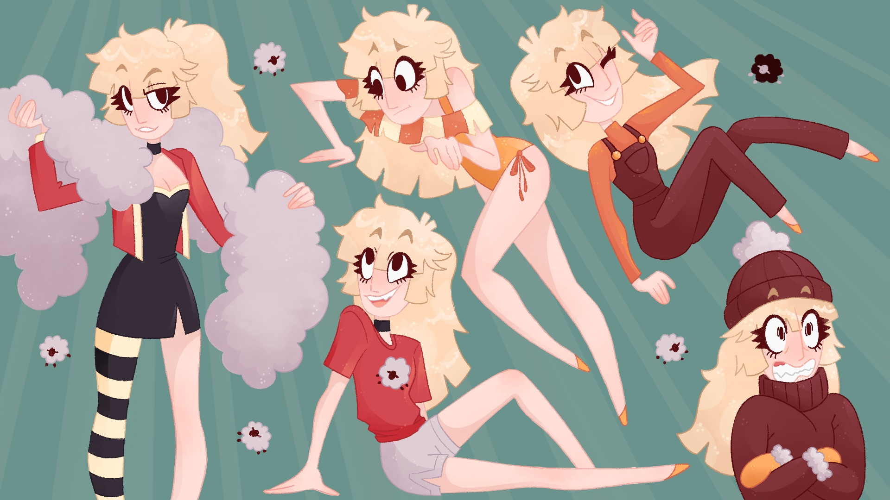
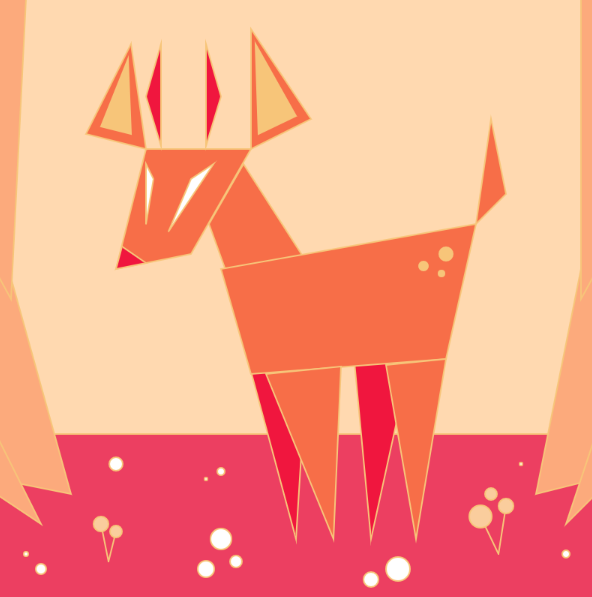
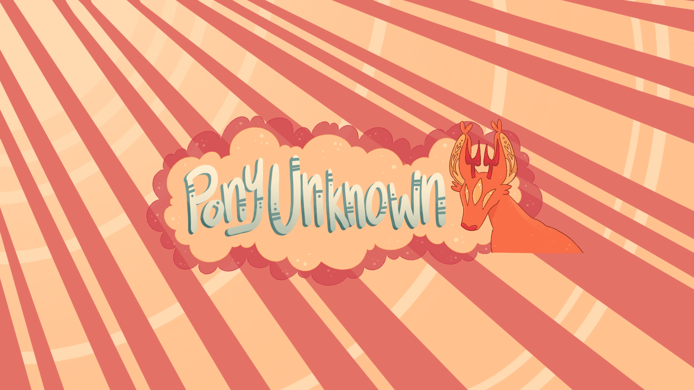